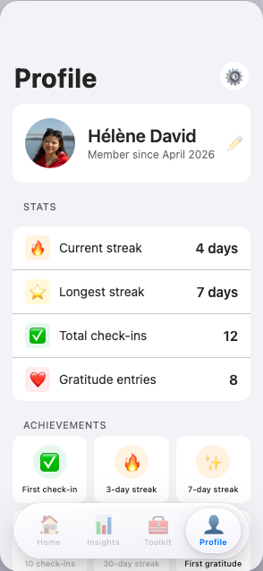
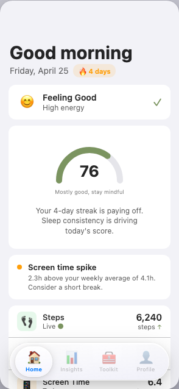
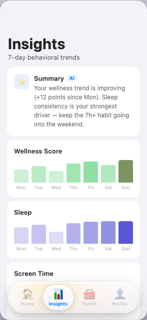

CalmCampus detects the early signs of student burnout through passive
behavioral signals — sleep, screen time, activity — and delivers
evidence-based micro-interventions powered by AI.
All data stays on-device. Always.
Student burnout doesn't appear overnight. It builds over weeks through disrupted sleep, excessive screen time, and declining activity — signals that are completely invisible to counsellors and universities until a student is already in crisis.
Universities only learn about mental health struggles when students seek help — often months into a crisis.
60% of struggling students never contact their university's wellbeing services due to stigma or access barriers.
Current solutions are reactive. Therapy waitlists, crisis lines, and counselling don't prevent burnout — they respond to it.
CalmCampus runs silently in the background, building a behavioral baseline unique to each student. When signals drift, it intervenes early — with breathing exercises, grounding techniques, and CBT-based prompts that take less than 5 minutes.



Monitors steps, sleep, screen time, and focus — no manual input required.
A daily score powered by on-device ML that reflects your current behavioral baseline.
Detects deviations from your personal baseline before they escalate.
Evidence-based CBT & ACT exercises, guided breathing, and grounding techniques.
Direct integration with KU Leuven student support services and crisis contacts.
All processing happens on-device. No cloud sync. GDPR-native by design.
CalmCampus silently collects behavioral signals — steps, sleep duration, screen time, and focus sessions — with zero manual effort from the student.
Over the first two weeks, the app builds a personalized behavioral baseline specific to each student's unique patterns and rhythms.
When signals deviate from the baseline — poor sleep, high screen time, low activity — the AI flags early warning signs before they become a crisis.
The app delivers targeted, 3–5 minute interventions: breathing exercises, grounding techniques, gratitude prompts, and CBT-based cognitive reframing.
CalmCampus is built on a principle most health apps ignore: your mental health data should never leave your device. Our on-device ML pipeline means no central database can be breached, no data can be sold, and no GDPR consent banners are needed — because there's nothing to consent to.
Single codebase, native performance. Built for real device sensors — pedometer, screen time APIs, and notification scheduling.
Behavioral anomaly detection and wellness scoring run entirely on the student's device. Zero server roundtrips for health data.
No data collection means no compliance burden. Data is stored locally in Hive (encrypted) and never leaves the device.
Every intervention is grounded in peer-reviewed Cognitive Behavioral Therapy and Acceptance & Commitment Therapy evidence bases.
The student mental health market is underserved and growing. Universities are under increasing pressure from accreditation bodies to demonstrate student wellbeing outcomes. CalmCampus is the only privacy-first, behaviorally-grounded solution built specifically for this audience.
Problem validated through surveys with KU Leuven students. 78% reported burnout symptoms. 91% said they'd use an app that detected it early.
Full Flutter app built with passive sensing, AI wellness scoring, anomaly detection, and a complete intervention library.
Selected to pitch at KU Leuven's flagship student startup competition.
Closed beta with 200 students. Partnership with student wellbeing services. IRB approval for longitudinal study.
Expand to 5 Belgian universities. B2B licensing model for institutional wellbeing dashboards (aggregated, anonymised data only).
We're looking for partners, angels, and institutional investors who believe that mental health infrastructure is the next frontier in education technology. If that resonates with you, let's talk.
Help us run our KU Leuven pilot, hire our first clinical advisor, and begin the IRB study that proves clinical efficacy.
Integrate CalmCampus with your institution's student wellbeing services. White-label options available.
Healthcare providers, insurers, and EdTech platforms — let's explore what a deeper collaboration looks like.